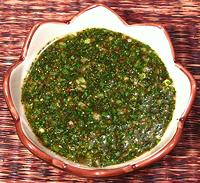

 |
Chili Herb SauceThailand | ||||
| Makes: Effort: Sched: DoAhead: |
3/4 cup ** 20 min Yes |
This flavorful dipping or sprinkling sauce should be freshly made, because even refrigerated it looses its bright color fairly quickly - but the flavor is still fine. It is particularly good with meats, such as pork spare ribs. | |||
|
8 1-1/2 2 2 1/2 1 3 1/3 |
T T T T T T c |
Thai Chili, dry (1) Scallion Mint fresh Cilantro Sugar Rice Powder (2) Fish Sauce Lime Juice |
Make - (20 min)
|